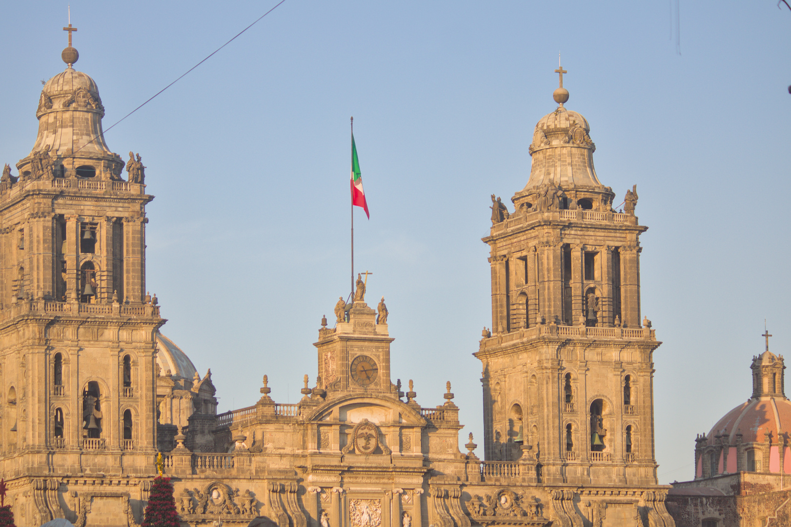
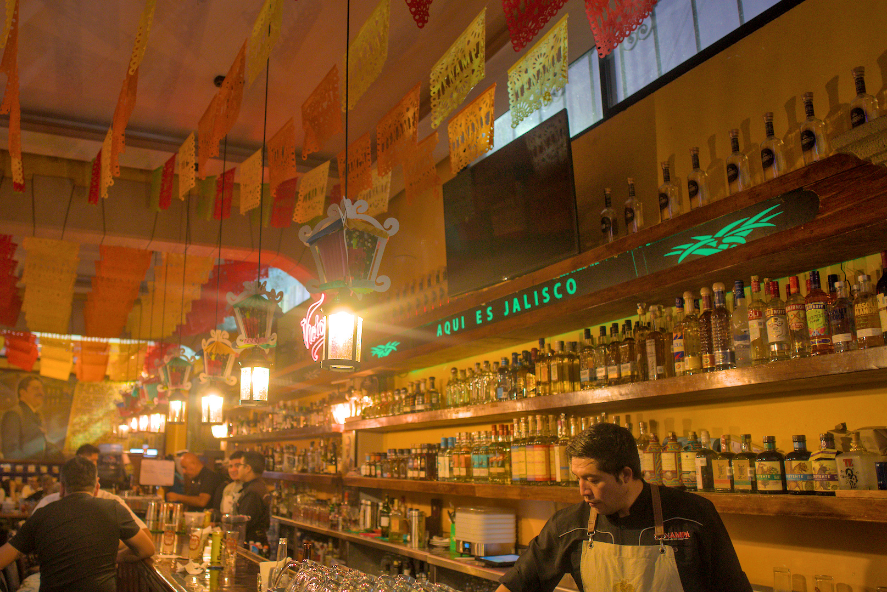
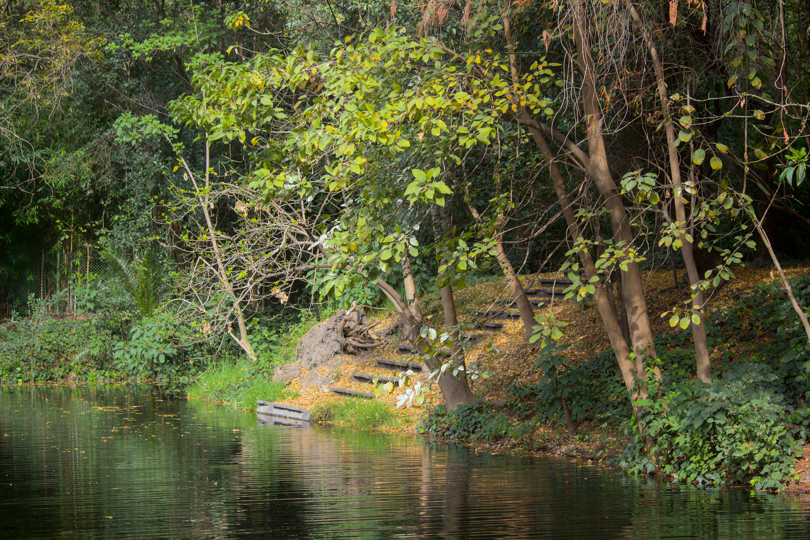
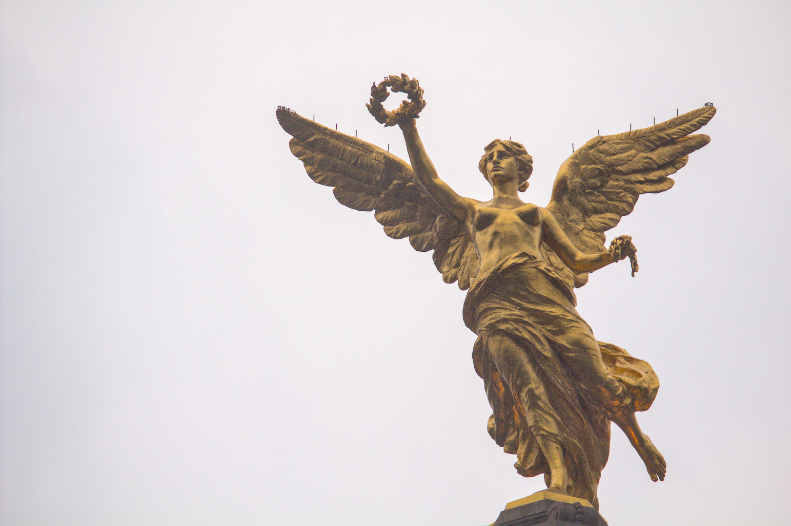
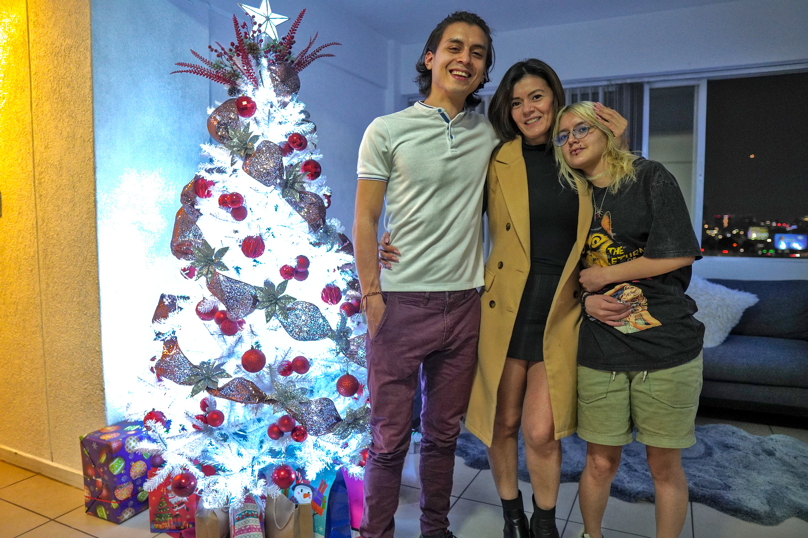
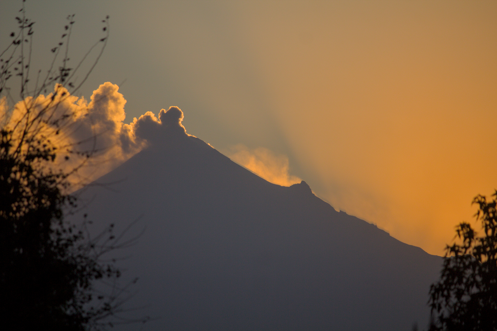
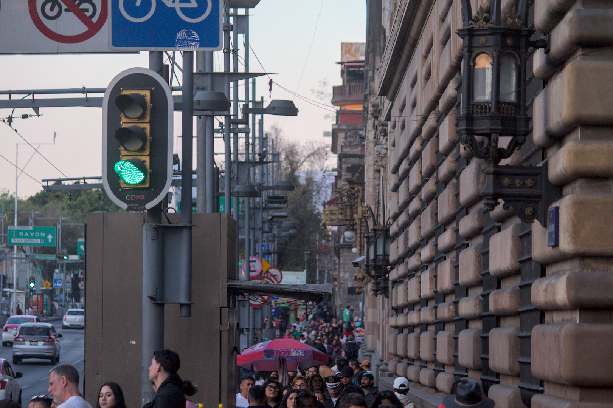

Bajo el cielo Azteca: Las crónicas de un reencuentro
I. La llegada al país Azteca
El viaje había comenzado, y con él, una nueva aventura. Mientras el avión surcaba los cielos rumbo a Ciudad de México, me sumía en pensamientos cargados de expectativa y emoción. Este no era un viaje cualquiera; era una reunión largamente esperada con mi madre y mi hermano, después de varios años de comunicarnos exclusivamente a través de pantallas. La temporada navideña era el escenario perfecto para este reencuentro, aunque el hecho de que regresara el 31 de diciembre para recibir el año nuevo en Colombia con mi pareja agregaba un toque de melancolía. Su ausencia en este viaje se sentía profundamente, una de esas ausencias que colorean las alegrías con un leve matiz de tristeza. El nerviosismo también estaba presente. Sabía de historias de compatriotas a los que se les había negado la entrada a México, por lo que me aseguré de estar preparado: una carpeta llena de documentos necesarios y un conocimiento exhaustivo de los requisitos migratorios. Aunque los colombianos no necesitan visa para ingresar, las exigencias documentales pueden ser abrumadoras. Mi experiencia previa viajando a Europa y el Caribe me daba algo de confianza, pero los aeropuertos siempre son un terreno impredecible. Afortunadamente, la suerte estuvo de mi lado desde el principio. El vuelo no iba lleno, lo que me permitió disfrutar de algo de espacio extra y, para mi alegría, un segundo plato de comida gracias a las sobras del servicio. Alimentarme bien siempre hace que los vuelos sean más llevaderos, incluso cuando son relativamente cortos como este de cinco horas. El aterrizaje en el Aeropuerto Internacional Benito Juárez, que lleva el nombre del legendario presidente mexicano, marcó el comienzo oficial de mi aventura. La vista de la ciudad desde el aire era impresionante: un enjambre interminable de luces que parecía desafiar al horizonte mismo. En el aeropuerto, mi madre esperaba con ansias. Imaginaba el momento de abrazarla, la calidez de su abrazo deshaciendo los años de distancia en un instante. El viaje al apartamento también tenía su cuota de emoción. Mi hermano menor, que creía que llegaría tres días después, no tenía idea de que aparecería justo a tiempo para celebrar su cumpleaños. Era una sorpresa cuidadosamente planeada, una pequeña complicidad entre mi madre y yo para hacer ese día inolvidable. Me imaginaba su expresión al verme aparecer por la puerta y cómo esa reunión inesperada podría ser el mejor regalo de todos. Esa primera noche en Ciudad de México prometía estar cargada de emociones. Habría risas, conversaciones interminables y esa conexión indescriptible que solo se siente al estar cara a cara con quienes amas. Después de tanto tiempo separados, las palabras fluirían con naturalidad, y los silencios, lejos de ser incómodos, serían momentos para disfrutar la presencia mutua. Más que un reencuentro, sería un regreso al hogar, al calor de una familia que, pese a la distancia y el tiempo, seguía siendo mi refugio más seguro. La llegada al país Azteca no solo marcó el inicio de unas vacaciones, sino también un reencuentro con mis raíces, mis afectos y, en cierta medida, conmigo mismo. La promesa de descubrir o redescubrir México estaba allí, esperando, llena de colores, sabores y emociones que, como yo descubriría pronto, harían de este viaje una experiencia inolvidable.
II. Primera noche en Ciudad de México
Mi llegada a México no podría haber sido más espectacular. Al descender del avión, fui recibido con la calidez de mi madre y su pareja, cuyas sonrisas reflejaban la emoción del reencuentro. Desde el aeropuerto, nos dirigimos directamente a la icónica Plaza Garibaldi, un lugar impregnado de historia y tradición que prometía sumergirme en el alma musical y festiva de México. Bautizada en honor a Giuseppe Garibaldi, un héroe de origen italiano cuyo nieto había defendido a México durante la intervención estadounidense de 1914, la plaza es mucho más que un punto de encuentro. En este lugar vibrante y pintoresco, los mariachis se han congregado desde el siglo XX para ofrecer su música al público, convirtiéndolo en un epicentro de cultura y alegría. La atmósfera nocturna estaba cargada de energía: las guitarras, trompetas y voces resonaban al unísono, creando una sinfonía que parecía envolver cada rincón. Visitamos el legendario Salón Tenampa, un lugar que desde su inauguración en 1925 ha sido un emblema de la Ciudad de México. Fundado por Juan Indalecio Hernández Rojas y nombrado en honor a un pueblo de Veracruz, el salón es reconocido por popularizar el mariachi y ser un bastión de la tradición mexicana. Sentado en sus mesas, rodeado de murales que narran historias de antaño, me dejé llevar por la experiencia más auténtica que uno podría imaginar. Allí, degusté una exquisita birria, un caldo profundo y aromático con carne de chivo, cuyo sabor me transportó directamente al corazón de la cocina tradicional mexicana. Los tragos no tardaron en aparecer: probé una selección de tequilas que parecía interminable, cada uno más refinado que el anterior, y hasta me aventuré con un trago de mezcal, cuyo sabor ahumado me sorprendía con cada sorbo. Mientras tanto, un grupo de mariachis rodeó nuestra mesa. Sus canciones eran una celebración de la vida y la pasión; nosotros cantábamos con ellos, nuestras voces entrelazadas con la música en un momento que se sentía eterno. Al finalizar esta experiencia única, regresamos a casa. La sorpresa no había terminado: desperté a mi hermano menor para desearle un feliz cumpleaños. Su expresión somnolienta se transformó rápidamente en alegría al verme. Continuamos la celebración en la intimidad del hogar, compartiendo historias, risas y unos tragos más. La noche se extendió hasta el amanecer, y aunque el sueño comenzaba a hacerse sentir, el calor de nuestra reunión hizo que cada minuto valiera la pena. Esa primera noche en Ciudad de México fue mágica, un inicio que marcó el tono de lo que sería un viaje inolvidable. Entre la música, los sabores y la familia, experimenté una bienvenida que me recordó lo poderoso que es el acto de compartir y celebrar las tradiciones que nos unen.
III. Zoo del Parque de Chapultepec
En los días posteriores a mi llegada, el Parque de Chapultepec se convirtió en nuestro destino. Este vasto y legendario espacio, uno de los más grandes y antiguos del mundo, guarda en sus senderos una riqueza histórica y natural que resulta imposible ignorar. Su magnitud, un oasis de verde que parece interminable, me envolvió en una sensación de calma y asombro. A cada paso, se desdibujaban los ruidos de la metrópolis, reemplazados por el susurro del viento entre los árboles y el canto de las aves. Este parque, considerado sagrado por los Mexicas, fue transformado durante la época colonial en un espacio recreativo y residencial para los virreyes. Posteriormente, se convirtió en un lugar público que ahora recibe a miles de visitantes. Su nombre, "Chapultepec", proviene del náhuatl y significa "cerro del chapulín", una referencia que cobra sentido al observar su paisaje ondulante. Una de las joyas del parque es el majestuoso Castillo de Chapultepec, que se alza imponente en la cima de una colina. No obstante, la atracción principal para mí ese día fue el Zoológico de Chapultepec, un lugar cargado de historia y biodiversidad, inaugurado en 1924 y considerado uno de los más importantes de América Latina. Acompañado de mi hermano y uno de sus amigos, pasamos el día recorriendo este refugio animal. Aunque algunas de las especies más icónicas, como el panda gigante y el león, no estaban a la vista, la diversidad que se desplegaba ante nosotros era impresionante. Desde majestuosos felinos hasta aves de colores vibrantes, cada exhibición parecía transportarnos a un rincón diferente del planeta. La jornada estuvo marcada por la fascinación y el descubrimiento, pero también por la extenuación. Horas de caminata nos llevaron a explorar gran parte del parque, pero también dejaron nuestras piernas doloridas al final del día. Sin embargo, esa sensación de cansancio físico quedó eclipsada por la satisfacción de haber vivido una experiencia tan enriquecedora. Regresamos a casa con el eco de los recuerdos frescos y las conversaciones compartidas durante el paseo. El Parque de Chapultepec, con su mezcla de historia, naturaleza y vida animal, me dejó una impresión profunda. Este día no solo fue un recorrido por sus senderos, sino también una invitación a reflexionar sobre la belleza y la importancia de conservar espacios como este, donde la humanidad y la naturaleza se encuentran en armonía.
IV. Parque de Chapultepec y Avenida reforma
Dos días después de mi visita al zoológico, decidí regresar al Parque de Chapultepec, esta vez en solitario. La experiencia de recorrerlo a mi propio ritmo me permitió apreciar cada detalle con una calma diferente. La inmensidad del parque se desplegaba ante mí como un vasto lienzo de naturaleza y cultura, ofreciendo rincones inexplorados que ansiaba descubrir. Mi primera parada fue el lago, donde decenas de personas disfrutaban de paseos en botes que podían rentarse para recorrer sus tranquilas aguas. La escena tenía una serenidad casi hipnótica: el reflejo del cielo sobre la superficie, las risas lejanas de quienes remaban y el vaivén acompasado de los pequeños barcos creaban una atmósfera de paz absoluta. Desde allí, continué hacia el jardín botánico, un oasis dentro del propio parque. La diversidad de flora era impresionante, con una colección de plantas exóticas y autóctonas que resaltaban por su colorido y singularidad. Lo que más captó mi atención fueron los cactus, cuyas formas variaban desde las espinosas estructuras clásicas hasta sorprendentes figuras escultóricas que parecían desafiar las leyes de la naturaleza. Cada rincón del jardín invitaba a la contemplación y a capturar en fotografías la esencia de su belleza. Tras sumergirme en ese microcosmos verde, emprendí el camino hacia la salida que conecta directamente con la icónica Avenida Reforma. Esta arteria, una de las más emblemáticas de la Ciudad de México, es mucho más que una vía de tránsito: es un corredor de historia, arte y modernidad. En su recorrido, numerosas rotondas albergan imponentes monumentos que narran distintos episodios de la historia mexicana, pero ninguno tan famoso como El Ángel de la Independencia. Al acercarme, me encontré con la majestuosa escultura dorada, que se erguía con una gracia casi celestial. Su postura, con una pierna elevada, alas extendidas y una corona de laurel en alto, simbolizaba la liberación y el triunfo. La cadena rota en su otra mano reforzaba el mensaje de emancipación, un símbolo poderoso en el corazón de la ciudad. Me tomé un momento para admirar su imponencia, reflexionando sobre el peso histórico que llevaba consigo. Mientras seguía mi camino por Reforma, mis ojos no dejaban de recorrer la arquitectura que se alzaba a ambos lados. Entre los modernos rascacielos y las estructuras más clásicas, la avenida se sentía como un testimonio vivo de la evolución de la ciudad. En el trayecto, también pasé por un mercado improvisado que se extendía a lo largo de varias cuadras. Su vibrante oferta de artesanías, joyería y antojitos típicos era un festín para los sentidos, un pequeño universo dentro del ajetreo citadino. Al final del día, regresé a casa con una satisfacción serena. Este paseo en solitario me había permitido no solo admirar la belleza de la ciudad, sino también conectar con ella de una forma más introspectiva. La noche buena se acercaba.
V. Familia y hallacas
La víspera de Nochebuena estuvo marcada por una tradición tan arraigada como entrañable: la preparación de hallacas. Este plato, insignia de la navidad venezolana, es mucho más que una receta; es un ritual que une a la familia en torno a la cocina, uniendo generaciones a través de la memoria y el sabor. Si bien todos colaboramos, debo admitir que mi participación inicial fue modesta. Mi primer encargo fue limpiar las hojas de plátano, un paso fundamental, pues estas serán la envoltura que protegerá la masa y su relleno. Fue un proceso meticuloso, casi meditativo, que me permitió sumergirme en la importancia del detalle dentro de la cocina tradicional. Más tarde, nos sentamos en la mesa: mi madre, mi hermano, una prima y yo. Entre risas y conversaciones, cada quien asumió un rol en la preparación: extender la masa, distribuir el guiso, doblar con cuidado cada hallaca. Mi tarea final fue amarrarlas, un arte en sí mismo. La tensión debía ser la justa: lo suficientemente firme para que se mantuvieran selladas durante la cocción, pero sin llegar a romper la hoja. Para ser mi primera vez, el resultado fue satisfactorio pues ninguna se abrió en el agua hirviendo. Tras dos horas de cocción, el aroma anunció que estaban listas. El 24 de diciembre, con el espíritu festivo en su punto álgido, disfrutamos del esfuerzo conjunto. La cena estuvo acompañada del calor familiar, y tras la comida, nos reunimos bajo el árbol de Navidad para abrir los regalos. La alegría se extendió hasta bien entrada la noche. El día de Navidad fue un contraste perfecto. Después del ajetreo de la víspera, el 25 transcurrió en una calma absoluta. Nos entregamos al descanso, disfrutando de la tranquilidad y del placer simple de estar juntos, sin prisas ni obligaciones. Fue un cierre perfecto para una celebración que, más allá de los sabores, se trataba de la familia y el tiempo compartido.
VI. Val’Quirico, un pueblito mágico
El 26 de diciembre emprendimos un viaje a un destino singular: Val’Quirico, un pintoresco complejo turístico ubicado en el estado de Tlaxcala. Mientras avanzábamos por la carretera, el paisaje nos regaló una vista imponente: los volcanes Popocatépetl e Iztaccíhuatl, eternos guardianes de la región, se alzaban majestuosos en el horizonte. Estos colosos naturales no son solo maravillas geográficas, sino también protagonistas de una leyenda ancestral. Se dice que Popocatépetl, un valiente guerrero, amaba profundamente a la bella Iztaccíhuatl. Sin embargo, su amor fue puesto a prueba por el padre de la joven, quien le exigió regresar victorioso de la guerra antes de permitir su matrimonio. Un rival celoso propagó el falso rumor de la muerte de Popocatépetl, lo que llevó a Iztaccíhuatl a sucumbir a la tristeza y fallecer. Al regresar y encontrarla sin vida, Popocatépetl la llevó a lo alto de una montaña, encendió una antorcha y juró velar por ella por la eternidad. Los dioses, conmovidos por su amor, los transformaron en montañas: ella en la silueta dormida del Iztaccíhuatl, “La Mujer Dormida”, y él en el Popocatépetl, que hasta hoy sigue humeando como símbolo de su eterna vigilancia. Finalmente, llegamos a Val’Quirico, un pequeño y encantador poblado que emula el estilo medieval toscano. Sus calles empedradas, edificios de arquitectura rústica y balcones decorados con flores nos transportaban a un escenario digno de un cuento de hadas. Al estar en plena temporada decembrina, el ambiente era mágico, luces intermitentes adornaban los callejones, formando un cielo estrellado artificial que aún así transmitía calidez y nostalgia. Pasamos la noche en el lugar, disfrutando de su atmósfera y explorando sus rincones llenos de galerías, tiendas de artesanía y eventos culturales. Al día siguiente, antes de partir, almorzamos en un restaurante especializado en carnes exóticas. Me aventuré a probar la carne de cocodrilo, cuyo sabor y textura sorprendentemente me recordaron al pollo. También degusté la carne de avestruz, más cercana en sabor a la res de lo que habría imaginado. Con el paladar satisfecho y la memoria llena de imágenes inolvidables, emprendimos el regreso a la Ciudad de México, llevando con nosotros la esencia de un rincón que, aunque artificial, lograba capturar la magia de tiempos pasados con una autenticidad encantadora.
VII. Centro histórico
Ya en los últimos días de mi viaje, decidimos visitar a una tía que no había tenido la oportunidad de ver antes. Sus tres pequeñas hijas, nacidas en México, eran un rostro nuevo para mí, pues nunca habían viajado a Venezuela o Colombia. Fue un encuentro lleno de alegría y curiosidad, marcado por risas y relatos compartidos durante el almuerzo. Luego de esa grata reunión, me dirigí con mi madre al corazón histórico de la ciudad. La noche de mi llegada a México había estado en la Plaza Garibaldi sin ser consciente de cuán cerca estaba del centro histórico. Solo hasta el 29 de diciembre, caminando por sus calles con mi madre, entendí la magnitud y el encanto de este sector de la ciudad. Nuestra primera parada fue el Zócalo, una de las plazas más grandes y emblemáticas del mundo. Desde allí, se erguía imponente el Palacio Nacional y la majestuosa Catedral Metropolitana de la Ciudad de México. Sin embargo, un evento con carpas y tarimas impedía ver completamente la explanada en su grandeza. Desde el Zócalo, tomamos la Avenida Francisco Madero, una vibrante calle peatonal flanqueada por hoteles, palacios, templos, galerías y tiendas. En su recorrido, la Torre Latinoamericana se perfilaba en el horizonte, con su reloj destacando entre los edificios. Cada paso por esta avenida revelaba fragmentos de la historia de la ciudad, en un contraste fascinante entre lo antiguo y lo moderno. Al llegar al Palacio de Bellas Artes, quedé maravillado por su imponente arquitectura y las esculturas que lo adornaban. Su presencia en medio de la ciudad es imponente, una joya cultural que resplandece en su entorno. Lamentablemente, el museo ya había cerrado, por lo que nos conformamos con recorrer su exterior, admirando cada detalle de su elaborada estructura y de la plaza que lo rodea. Para cerrar la jornada, volvimos a la Plaza Garibaldi. Esta vez, con cámara en mano, capturé algunos momentos dentro del legendario Salón Tenampa, un lugar que había conocido en mi primera noche en México pero que ahora exploraba con más atención. Entre fotos y tragos, la noche transcurrió en un ambiente de celebración y nostalgia. Fue en ese momento cuando realmente comprendí lo interconectado que estaba el centro histórico con mis primeras impresiones de la ciudad: un tejido de historia, música y tradiciones que había enriquecido mi viaje de una manera inesperada.
VIII. El día previo
En la víspera de mi vuelo de regreso, decidí aprovechar al máximo el tiempo que me quedaba en México. Acompañado de mi hermano, nos dirigimos a Polanco, una de las zonas más sofisticadas de la ciudad. Nuestro primer destino fue el Museo Soumaya, un imponente edificio con una arquitectura singular, cuya silueta es inconfundible incluso a la distancia. El interior del museo albergaba una impresionante colección que recorría diferentes periodos artísticos. Desde esculturas Greco-Romanas y Renacentistas hasta intrincados colmillos de elefante tallados con un nivel de detalle abrumador, cada piso ofrecía una nueva sorpresa. Con seis niveles repletos de arte, explorar cada exposición en profundidad requería más de un día. Para cuando llegamos al cuarto piso, ya solo dábamos vistazos rápidos a las obras, tratando de absorber lo más posible en el tiempo que teníamos. Al salir del museo, nos dirigimos al Acuario Inbursa, un espacio fascinante que me dejó maravillado. Lo más impactante fue la gigantesca pecera con un túnel de vidrio que permitía caminar bajo el agua mientras pequeños tiburones nadaban sobre nuestras cabezas. Fue una experiencia inmersiva, como si estuviéramos dentro del océano mismo. También nos encontramos con pingüinos y tuvimos la oportunidad de alimentar a unas mantarrayas, cuya extraña forma y bocas peculiares resultaban casi de otro planeta. El regreso a casa estuvo acompañado de una exploración gastronómica improvisada. En los puestos callejeros, probé una variedad de antojitos típicos. La torta de jamón, que en realidad es un emparedado, fue una delicia sencilla pero sabrosa. Los chilaquiles, tortillas de maíz tostadas y troceadas, bañadas en salsa verde, cebolla y carne, ofrecieron un festival de sabores picantes. Finalmente, las quesadillas fritas, similares a las empanadas colombianas, sorprendieron por su textura crujiente y su relleno abundante. Cada bocado era un recordatorio de la riqueza culinaria mexicana. Con el estómago satisfecho y la nostalgia comenzando a hacer efecto, volvimos a casa. Apenas unas horas después, estaría de nuevo en Colombia, dejando atrás una ciudad que me había envuelto con su historia, su gente y sus incontables maravillas. El viaje llegaba a su fin, pero los recuerdos perdurarían por mucho tiempo más.
IX. De vuelta en el país Muisca
El viaje llegó a su fin, pero su huella quedó grabada en mis recuerdos. Cada rincón visitado, cada comida saboreada y cada historia compartida con mi madre y mi hermano fueron tesoros invaluables que atesoraré por siempre. México me recibió con los brazos abiertos, mostrándome su grandeza en cada calle empedrada, en cada plaza rebosante de vida y en cada plato que contaba su propia historia culinaria. Regresar a mi tierra, al país de los Muiscas, me llenó de reflexiones. Viajar no solo es desplazarse de un lugar a otro, sino expandir los límites de la comprensión. Conocer el mundo es asomarse a nuevas culturas, es entender las distintas formas de vida que existen más allá de nuestras fronteras. Cada experiencia transforma la manera en que percibo mi propia realidad, despertando una curiosidad insaciable por lo desconocido. Ahora, con el corazón repleto de memorias y la mente inquieta por futuras travesías, sé que este no será mi último viaje a tierras mexicanas. Aún queda mucho por descubrir, muchas historias por escuchar y muchos sabores por probar. Con la certeza de que cada viaje deja su huella, miro hacia el horizonte, sabiendo que la aventura nunca termina, sino que se transforma en parte de lo que somos.